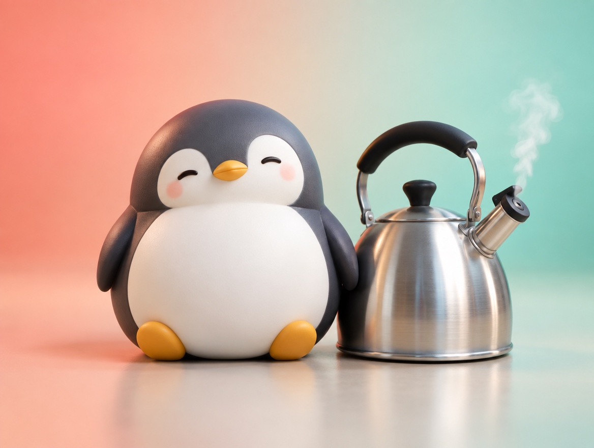

🧪 LAB · 試作 — AIが読書メモから一気に作った記事です。本番の一覧には出していません · 試作の一覧
🐧 EVERYDAY LIFE⚡ 40 SEC
Do not keep anger inside; let it out in a small voice, alone 💨

Sound Familiar
When you get annoyed, do you ever hold it in because "I am an adult"?
But if you keep anger inside, it explodes later in a different place.
The Point
So I recommend letting anger out little by little while it is still small.
The Reason
This is because anger is like steam in a kettle, and it gets stronger as it builds up.
It often happens that you hold it in outside, and then take it out on your family at home.
⚡ TRY IT
The anger pot: let out a little steam
A busy day is about to start…
🚃 The train was super crowded.
☔ The rain got your shoes wet.
🛒 Someone cut in line.
📱 You dropped your phone.
⏳ You waited 30 minutes.
🔒 The shop was closed today.
🏠 You are home!
Huh? Why are you angry at me?
Welcome home! Dinner is ready! 🍜
Annoying things will happen. Tap to let out a little steam, quietly.
🍜 You got home calm. Dinner tastes great!
💥 Boom! It exploded at home… The little one did nothing wrong.
For Example
For example, when you are alone, you can just say "Come on…" in a small voice.
Sticking out your tongue in your heart is also a good way to let out steam.
In Short
A small "Come on…" can stop a big explosion.
📚 I wrote this from my reading notes.